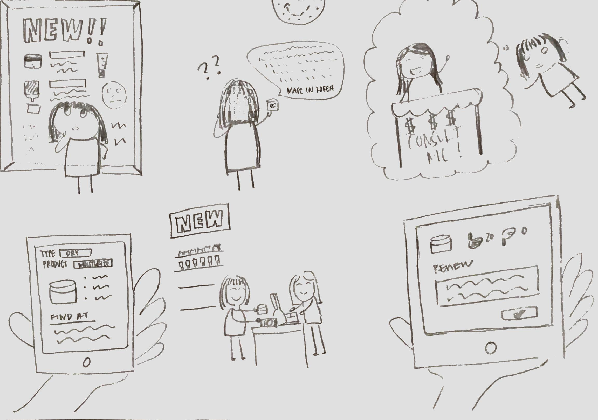
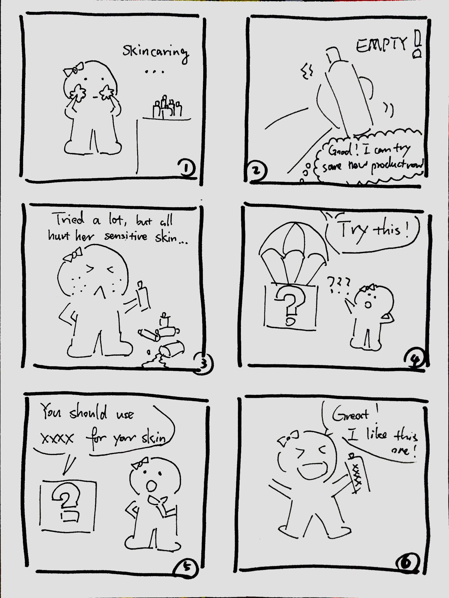
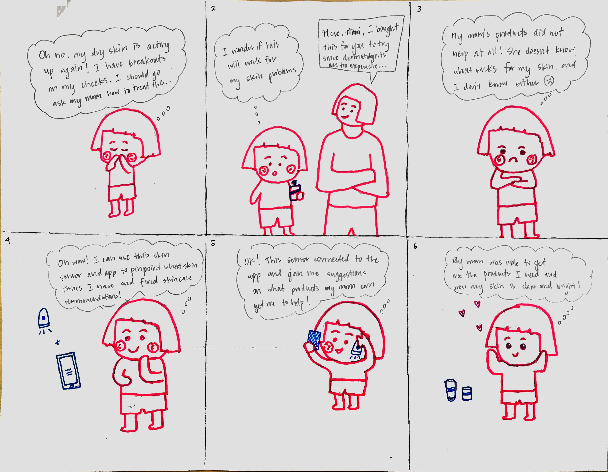

Mission Statement
To bridge the gaps between skincare recommendations, product information, and skin detection devices to allow users to easily create and follow personalized skin care routines in an accessible way.
Brief
Duration: 4 weeks
Collaborators：Joanne Cho, Vanessa Wong, Chen Liu, and Jiayi Zheng
Role: UX Designer and Coder
Tool: InVision, Pen + Paper + Cardboard, Adobe InDesign, 3d Printer.
Skills: UX Design, Interaction Design, Needfinding, Interviewing, Prototyping, UI design.
The Challenge
Skin is the body’s biggest organ in size that acts as a protective barrier between your insides and the rest of the world. We wanted to tackle this different facet of health as a way to promote self-care and wellness, which are important aspects of one’s health. Skincare is a very personal thing that can help not only with physical health, but also in mental and emotional health to relieve stress and increase overall feelings of wellness.
User Research: Online Research / Field Work
We conducted online research on existing skincare related applications as well as existing physical prototypes to gain a better understanding of what’s in the market so far. During this research period, we found several applications that were relevant but most catered to a single aspect of skincare- checking skin’s condition, understanding products, or getting reviews and advice. For example, some applications catered to acne only (MD Acne), others focus on revealing ingredients in products (ThinkDirty), and yet others act as advice forums to provide information on certain products as well as conditions for users (mySkin). Most physical prototypes were scanners that indicate skin condition- we chose to keep this functionality. We chose to target beginners as we found a gap in the market for an application that catered to true skincare beginners and narrowed our application’s foci on checking skin’s condition and getting reviews and advice to make personalized routines.
Personas
Moodboard

Storyboard
# 1
# 2
# 3
Screen Design


Design Spec

Physical Prototype

User Testing

Poster

Prototype
Slide Deck